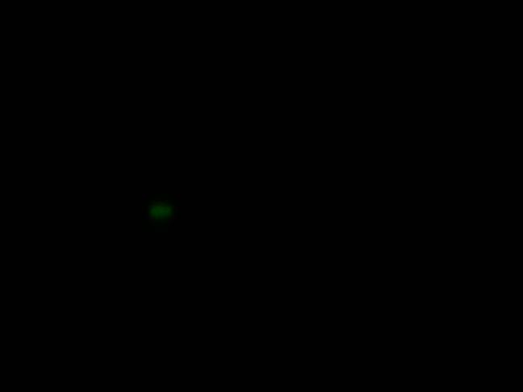
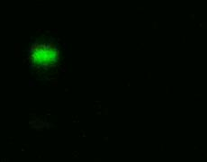

Lego SpectrometerMeasurement taken on 11/24/2021 - 16:44:36Scientist: Ada P DyerLight source: Neopixel color 0,255,0 (green) Transmission sample: Extra virgin olive oil Exposure: 2000 µsec Experiment notesNormal size slit. No tracing paper. My first experiment with a transmission sample! Yay! 🥽👩‍🔬 |
ImagesRaw imageProcessed imageSpectrum |
DataDownload data - spectrum-20211124-164436.csv |